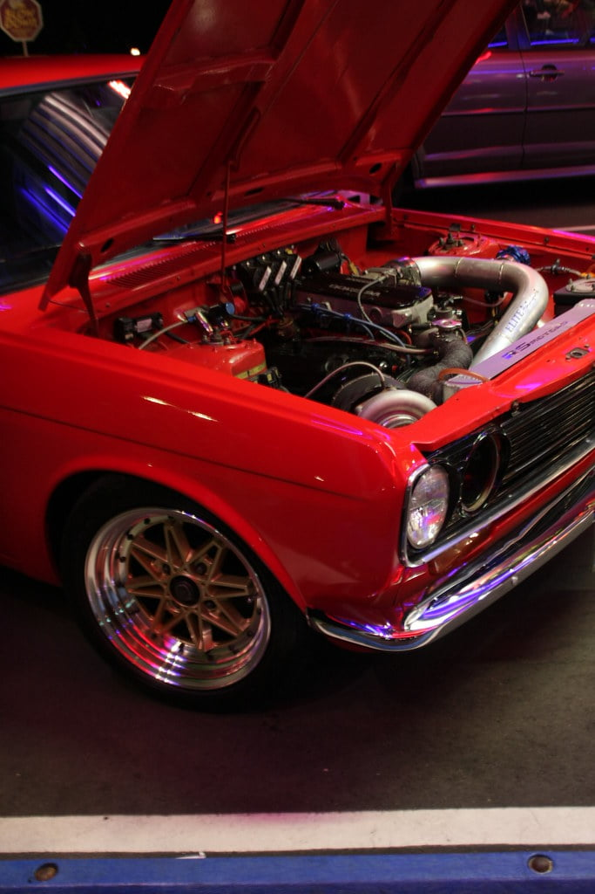

-
Actually a 1.00 AR isn't bad because with one side closed off with a QSV it acts like a much smaller AR. Then when the QSV opens up you get full top end potential.
Call them up and see if they make it for the 62 turbine wheel.
On another note....did some street tuning tonight with my 6765 and I was making abot 6 psi by 3500 rpm and climbing fast. That's as high as I went in boost since I'm still breaking in the engine and clutch.Shiro #443

-
I personally feel my 6262 is the perfect street turbo. Its an easy 475 rwhp turbo on pump gas and has very snappy spool. I'll try to get a video up sometime this weekend showing RPM vs Boost as I go through 2nd & 3rd gear.545 RWHP & 540 RWTQOriginally posted by Andrew84zx
tell her your car is so fast it will make her panties fly off

-
What specs did you go with?FlawleZ wrote: I personally feel my 6262 is the perfect street turbo. Its an easy 475 rwhp turbo on pump gas and has very snappy spool. I'll try to get a video up sometime this weekend showing RPM vs Boost as I go through 2nd & 3rd gear.
http://www.powertune.com.au/6262.html -
[quote]SATAN wrote: [quote=260DET]So what is the power band? I bet that motor sounds so awesome in person.Originally posted by Racinjitter -
6765, divided turbine housing, quick spool valve.
money.

1988 300zxt. gt35, stance, etc. Wheels: Varrstoen ES2 18x9.5 et-13 225/40. 18x10.5 et0 245/40
1990 jetta vr6'd -
That's what I plan on running when the time comes. It's not that bad of a price, I think around $2000 is about the lowest I've seen for the 6765 Ball Bearing Billet with the divided T4 housing.
I've also been keeping my eyes on Turbonetics with their forged billet wheels, They've released the 64mm, then went back up to the monsterous 122mm and working their way down in size for the new billet wheels. I'm wondering if more will be available by the time I'm ready to buy.


-
On pump gas huh? I feel like it will be difficult to make a reliable 450rwhp on pump. This is why I will be going purely e85 once I install this turbo. I should be able to make 450rwhp on less boost(more timing) and be more reliable....FlawleZ wrote: I personally feel my 6262 is the perfect street turbo. Its an easy 475 rwhp turbo on pump gas and has very snappy spool. I'll try to get a video up sometime this weekend showing RPM vs Boost as I go through 2nd & 3rd gear.
Im sure I will end up with a 6262 without a quick spool. In this case I might as well stay with a stock manifold....
Im also considering a HX52 Holset with a Quick Spool Valve… 700whp capable -
Well my friends I got in my Z a PT6765 and works real nice.Straights are for Fast Cars. Turns are for Fast Drivers.
Life Starts at 1.3Bar(17Psi). -
[quote]roastin300 wrote:why do you think its hard to make that much power on pump gas? vettes do that easily and all day long, hell even the zr1 puts down a nice chunk of it and they run on pump too. its like what 5xx on 93 oct? a lot more on a little bit more boost. Hennessey made something like 700 on pump with just a pulley change.Originally posted by FlawleZ -
Chris,
When running more than 20psi of boost the intake temps are very high. That coupled with low resistance to knock from 93 octane fuel, you are playing with fire. When is the last time you saw a car running high boost (25+psi) and not run e-85 or race fuel? There is a reason for higher octane ratiings when you add more boost. Shiro Special # 981 Being assembled in my spare time Chromoly acquired!
Shiro Special # 981 Being assembled in my spare time Chromoly acquired!
Originally posted by BoostedMamma -
Exactly. When I made 398rwhp on 18-20psi, I had to pull out a TON of timing. I probably could have made that more safely had I run e85 on 15-16psi with 6-8 degrees more timing under boost.Racinjitter wrote: Chris,
When running more than 20psi of boost the intake temps are very high. That coupled with low resistance to knock from 93 octane fuel, you are playing with fire. When is the last time you saw a car running high boost (25+psi) and not run e-85 or race fuel? There is a reason for higher octane ratiings when you add more boost.
And you cant compare a henessey or a vette. They make big numbers to begin with and have a much larger displacement. Im sure they are making those numbers on boost levels under 15psi. Its more the amount of boost you are running, hence the compression ratio. I can run 85 octane all day long as long as boost is under 10psi. Once I get to about 15psi on 91 octane, I have to pull a crapload of timing out. I threw a few gallons of e85 in, about a 1/5 mixture of e85 with 91 octane and you wouldnt believe the difference if I told you. By the way the highest octane pump gas here in Colorado is 91, not 93....
Everyone is rollin e85 these days. Its amazing how much abuse you can throw at the motor and not have to worry about detonation, you can keep crankin the boost and timing and it loves it. -
They recently re-tuned all of the V8 Supercars Championships here in Australia to run E85.
I've just discovered that they're rolling this out here. They're calling it Bio E-Flex, and all the tree huggers are are jerking themselves over it as the future of fuels. There's only about 5 stations in the whole state that sell it currently though. -
I'd like to run E85, but I think the nearest station to me is about a 3 hour drive away. -
The bigger the turbo, the more power you can make on a lower octane.LaterZ" I don't want to come off sounding butt-hurt, but I really loathe most cressida owners and I'm glad I soiled their platform with a Nissan dinosaur under the hood." - Butter -
Buy a 5857 with .82 ar. I get full spool around 4000ish rpm (about 20 psi) with a few pre turbo exhaust leaks. The turbo is rated at 605hp and I believe it to be underrated. I purchased the turbo for $799 brand new from modern automotive performance.
The turbo looks physically larger than the 5857 sizing would suggest…

-Colton

Copyright © 2006–. All rights reserved. Privacy Policy